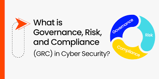

مسارات الأمن السيبراني
تعرف على المسارات المختلفة للأمن السيبراني واختر الأنسب لك.
مسار الدفاع السيبراني
يشمل هذا المسار تقنيات واستراتيجيات الدفاع عن الأنظمة والشبكات من الهجمات السيبرانية.
مسار التحليل الجنائي الرقمي
يركز هذا المسار على التحقيق في الجرائم السيبرانية وجمع الأدلة الرقمية لتحليلها.
مسار اختبار الاختراق
يعتمد هذا المسار على محاكاة الهجمات السيبرانية لاكتشاف الثغرات الأمنية قبل أن يستغلها المهاجمون.

مسار إدارة الأمن السيبراني
مسار إدارة الأمن السيبراني
يشتمل هذا المسار على وضع السياسات والإجراءات والإشراف على عمليات الأمن السيبراني داخل المؤسسات.